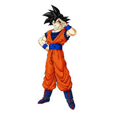

son Goku
Sobre:
Mais conhecido apenas como Goku, cujo nome verdadeiro é Kakarotto (カカロット Kakarotto?) é o protagonista da franquia Dragon Ball, criada por Akira Toriyama. Sua primeira aparição ocorreu no primeiro capítulo do mangá Dragon Ball, intitulado Bulma e Son Goku (em japonês: ブルマと孫悟空 Buruma to Son Gokū?), publicado na revista Weekly Shōnen Jump em 3 de dezembro de 1984.[3] Goku é inspirado num personagem com o mesmo nome, 孫 悟空 (lê-se Sun Wukong em mandarim e Son Goku em japonês), personagem principal do romance chinês Jornada ao Oeste.[4] Porém, Toriyama mudou algumas de suas características para ser mais original. Goku é apresentado como um menino estranho, com rabo de macaco e força sobre-humana. Conforme a história se desenrola, é revelado que ele descende de uma raça fictícia chamada Saiyajins, uma das raças mais poderosas do universo.